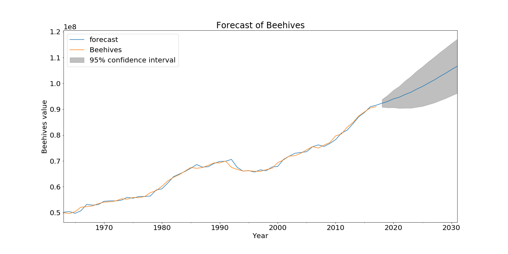

Introduction
Do you think bees are dying out everywhere in the world?
Well, even though everyone is talking about bee population declining, this is only partially true and actually far from true if looking at the global situation. Reportedly, in recent years there has been a decrease in the number of beehives in the world. However, after a preliminary analysis, we found out that this is not the case. Indeed, beehives are globally increasing! We will look into this phenomena more closely.
But, even if bees are not declining on a global scale, they still face many threats and some countries are more affected than others. Threats such as habitat loss, toxic pesticides, parasites, diseases, climate change, and invasive species, are still a big problem for bees and, from a broader perspective, for biodiversity.
In this article, we present a data-driven analysis of the present and the past of the bees situation, with a focus on their relation with some outer factors related to agriculture.
The reason behind this choice is that bees are not only important for producing honey and other bee products, but they also play a crucial role in the pollination process which is necessary for the development of crops.
At the beginning, we will introduce trends for the total beehives number and their correlation with factors and, to conclude, we will present two kinds of prediction models that we trained, one for predicting the number of beehives given the amount of crops production and country size and the other for beehives population forecasting.
Where does the data come from?
The dataset we are using is about global food and agriculture statistics and it is provided by the United Nations (FAOSTAT). It contains various agricultural data for 200 countries and about nearly 80 categories(crops, forestry, animals, prices, etc.), and most importantly beehives. An important thing to mention is that this data contains only the the honey bee species that are kept by beekepers and doesn’t include all the wild bee species that are present all over the World.
Beehives, a good indicator?
Obviously the number of beehives is not the same as the total number of bees. Nonetheless we assume the numbers to be highly correlated and that beehives is a good indicator of the bee population. Of course, it would be nearly impossible to count all the bees, so the experts usually talk about bee colonies instead which coresponds to beehives and bee nests. The assumption we make is that beekepers remove beehives that don’t have any bees inside and that those are not included in the count.
Structure of the article
- bees distribution: in this section we are going to explore spatial and temporal distribution of beehives in the world
- correlated factors: in this section we are going to analyse how other factors are correlated to the number of beehives
- model prediction: in this section we present the results of two models which goal is to predict the number of beehives and their population in the future (given the factors above).
Analysis
How are the beehives distributed?
The number of beehives in the world is not equally distributed and is not constant over time. We explore the change in the world, continents and certain countries. To start with, we introduce the world beehives population trend in an interactive graph.
We can see that the number of beehives is actually increasing in the world, in fact the total number of beehives increased 185.06% over the last 56 Years! But there could still be some differences between continents. Let’s look at this.
Not only we see a huge increase on the asian and african continent, we see a massive drop in Europe and America. America recovered but Europe still suffers in order to increase their population.
We picked some of the most interesting countries, in particular the ones with high increase or decrease in the number of beehives. The graph shows the percentage changes between the two picked year at the bottom. This graph is interactive as well, so free feel to explore!
Around the world
How beehives are distributed in the world, which countries are the best when it comes to beehives? Below we present the top 10 countries, both for number of beehives and for the ratio (number of beehives in country / total surface area of country).
We observe an interesting top ten. Most of these countries are big in terms of size like India, China, Russia and America. But we also have some smaller ones like Spain. The countries are interestingly split throughout the world. So beehives play an important role for every economy. Since we believe this is not a fair competition we will show the top ten countries by country size. Here we clearly see a shift towards smaller countries like XXXX.
(Describe this plot)
But, what factors influence beehives?
We took into consideration some of the available categories in the dataset, mainly related to crops, and for each one we analysed the correlation with beehives. We are presenting below the obtained results and providing some explanation of why these factors could be correlated.
Crops
80% of flowering plants depend upon bees for pollination. Pollination is crucial because many of our vegetables, fruits and the crops that feed our livestock rely on it to be fertilised. Vegetables such as broccoli, asparagus and cucumber rely on the pollination of bees, as do apricots, strawberries, apples, tomatoes and almonds.
(– plot here ???)
Predictions
What will the future trend of beehives be like? We analyzed the dataset so far and noticed a steady increase since 1960. The future could look similar. We used the whole time series to predict the future of beehives until 2030 and see it will be increasing even more. But the future is not set in stone. We saw a massive decrease of beehives in Europe and in the US between 1990 and 2000. This can happen anywhere and at any time. A lot of unpredictable factors and uncertainties influence beehive colonies.

Conclusions
In our project we answered several questions using different datasets. During the process we were surprised to disprove the common belief of beehives dying out. It was even possible to give a positive future if the trend continues. Nonetheless this is not true for every country. Especially in some european countries bee population is still declining. We found out that bee colonies are not equally distributed and that a small portion of countries is responsible for most of the beehives and further showed a correlation between beehives and crops. To do all this, we needed to find various datasets and even talk to experts in the field.